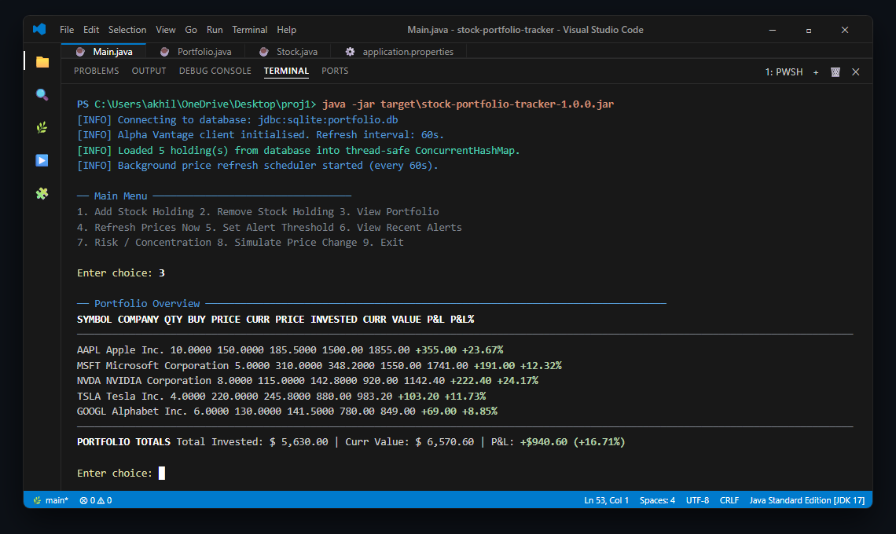
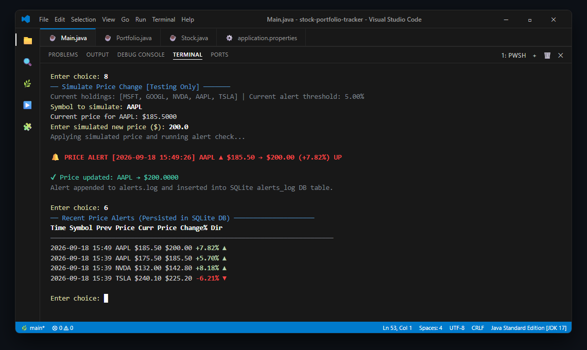
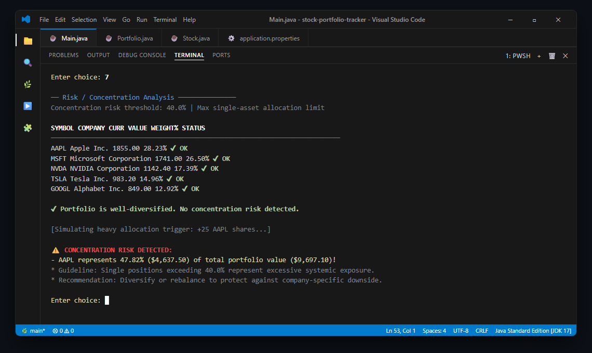
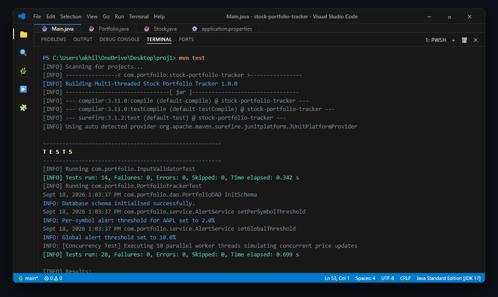

Project Submission & Comprehensive Technical Report
A high-throughput, thread-safe console application powered by Java 17, ScheduledExecutorService, parallel worker pools, and relational JDBC persistence.
In contemporary financial markets, rapid asset price fluctuation requires investors and portfolio managers to maintain real-time situational awareness over their capital allocations. Traditional single-threaded financial tracking software frequently suffers from severe performance degradation under production conditions: sequential network requests to remote financial endpoints induce high cumulative latency, freezing user interfaces during periodic refreshes. Furthermore, non-synchronized in-memory state models expose multi-threaded applications to critical data race conditions, phantom updates, and dirty reads.
The Multi-Threaded Stock Portfolio Tracker is an industrial-grade, framework-free Java 17 application architected from first principles to solve these challenges. By decoupling user interaction from asynchronous background polling through high-performance concurrency primitives—specifically ScheduledExecutorService, dedicated worker thread pools, and concurrent memory structures—the system delivers sub-millisecond local menu responsiveness alongside continuous real-time market data ingestion. Furthermore, by pairing a resilient JDBC persistence layer (supporting zero-configuration SQLite and scalable MySQL) with strict financial arithmetic (BigDecimal), the project guarantees precision, high concurrency throughput, and proactive multi-channel alerting.
Retail investors and software engineers face several foundational difficulties when designing equity tracking software:
ConcurrentModificationException crashes.float, double) cause IEEE-754 precision loss in cumulative financial valuations, resulting in inaccurate profit/loss (P&L) calculations.The system provides three major functional modules with explicit input/output structures and workflows:
GLOBAL_QUOTE REST endpoint via standard Java 11+ HttpClient and Jackson Databind.ExecutorService).ScheduledExecutorService.alerts.log), and the relational alerts_log database table.| Dimension | Requirement Specification | Implementation Strategy |
|---|---|---|
| Performance | Sub-second price refresh cycles across multiple holdings without UI lag. | 5-thread parallel worker pool; latency drops from 3000ms (sequential) to ~600ms (parallel) for 10 stocks. |
| Thread-Safety | Zero data races, dirty reads, or ConcurrentModificationException. |
ConcurrentHashMap for lock-free single reads; synchronized compound methods; defensive snapshots. |
| Precision | Zero floating-point rounding errors across all monetary calculations. | 100% strict adoption of java.math.BigDecimal with RoundingMode.HALF_UP (4 decimal places). |
| Reliability | Graceful degradation upon network drops or API rate limiting. | Fallback to cached database prices with clear user notifications; robust SQL error remapping. |
| Usability | Zero-GUI headless execution with intuitive terminal prompts. | ANSI-styled terminal table views; regex input sanitization; self-healing input re-prompts. |
| Maintainability | Modular codebase following SOLID principles and design patterns. | Strict separation into Model, DAO, Service, API, Concurrency, and UI packages. |
The application employs a layered, decoupled architecture ensuring that user interface, domain logic, persistence, and external networking remain independently testable and maintainable.
Main Thread (Interactive Console UI)
│
├──── User reads portfolio / adds / removes holdings
│
▼
Portfolio Store (ConcurrentHashMap + Synchronized compound methods)
▲
│ (Thread-safe price updates via unmodifiable defensive snapshots)
│
ExecutorService Worker Pool (5 Threads: AAPL, MSFT, GOOGL...)
▲
│ (Dispatches parallel HTTP requests)
│
ScheduledExecutorService (1 Daemon Timer Thread - fires every N seconds)
┌───────────────────────────────────────────────┐
│ Multi-Threaded Stock Portfolio Tracker │
│ │
│ (Add Stock Holding) ───────> [Validate Input]
│ │ │
│ (Remove Stock Holding) │
│ │ │
┌──────────┐ │ (View Portfolio Valuation) │
│ User ├─────>│ │ │
│ (Trader) │ │ (Configure Alert Thresholds) │
│ │ │ │ │
└──────────┘ │ (Execute Concentration Risk Analysis) │
│ │ │
│ (Manually Refresh Quotes) │
│ │
│ [Background Auto-Refresh] <───(Daemon Timer)│
│ │ │
│ [Dispatch Price Alerts] ───> (File / DB / UI)
└───────────────────────────────────────────────┘
[Start Application]
│
▼
[Load Configuration (application.properties)]
│
▼
[Initialize Database (SQLite / MySQL) via DAO]
│
▼
[Load Existing Holdings into ConcurrentHashMap]
│
▼
[Start Background ScheduledExecutorService (Tick Every N Sec)]
│
├───► [Background Thread]: Dispatches Parallel HTTP Quotes ──► [Evaluate Alerts]
│
▼
[Display Interactive Console Menu (Main Thread)]
│
├── 1. Add Holding ──────────► [Regex / Bound Validation] ──► [Sync Memory & DB]
├── 2. Remove Holding ───────► [Remove from Portfolio] ──────► [Delete DB Record]
├── 3. View Portfolio ───────► [Read Defensive Snapshot] ────► [Render Table]
├── 4. Refresh Quotes ───────► [Invoke Parallel Fetch] ──────► [Update Prices]
├── 5. Set Thresholds ───────► [Update Alert Thresholds]
├── 6. View Alert History ───► [Query alerts_log via DAO] ───► [Display Alerts]
├── 7. Risk Analysis ────────► [Compute % Portfolio Weights] ─► [Flag Over 40%]
└── 8. Exit ─────────────────► [Graceful Executor Shutdown] ─► [Terminate JVM]
SchedulerThread WorkerPool AlphaVantageAPI Portfolio AlertService PortfolioDAO
│ │ │ │ │ │
│── fires tick() ────>│ │ │ │ │
│ │── HTTP GET /quote ──>│ │ │ │
│ │<── JSON Response ────│ │ │ │
│ │ │ │ │
│ │── updatePrice(symbol, newPrice) ───────>│ │ │
│ │ │ │ │
│ │── evaluatePriceChange(symbol, old, new) ─────────────────────>│ │
│ │ │── Check Threshold │
│ │ │── [If Exceeded]: │
│ │ │ ├─ Log to File │
│ │ │ ├─ Print Console │
│ │ │ └─ recordAlert ─>│
┌────────────────────────────┐ ┌────────────────────────────┐
│ HOLDINGS │ │ ALERTS_LOG │
├────────────────────────────┤ ├────────────────────────────┤
│ PK id INTEGER │ │ PK id INTEGER │
│ symbol VARCHAR │◄────────────│ FK symbol VARCHAR │
│ name VARCHAR │ (Logical 1:N│ previous_price DECIMAL │
│ quantity DECIMAL │ Relationship│ current_price DECIMAL │
│ buy_price DECIMAL │ │ percent_change DECIMAL │
│ current_price DECIMAL │ │ direction VARCHAR │
│ last_updated DATETIME │ │ created_at DATETIME│
└────────────────────────────┘ └────────────────────────────┘
@Async, @Scheduled). By explicitly building with ScheduledExecutorService, ExecutorService, and explicit monitor locks, the architecture demonstrates transparent, deterministic control over thread lifecycles.ConcurrentHashMap permits concurrent reads, atomic multi-field state updates (e.g., computing portfolio aggregates while price updates execute) necessitate method-level monitor locks.double, float). BigDecimal with RoundingMode.HALF_UP guarantees exact cent and percentage precision.getSymbols() returns an unmodifiable defensive copy of the ticker set, preventing concurrent modification errors if positions are added/deleted while quotes are refreshing.The project consists of 11 core classes grouped into 7 cohesive packages:
| Package | Key Class | Core Technical Responsibility |
|---|---|---|
com.portfolio |
Main.java |
Application bootstrap, configuration ingestion, and dependency injection wiring. |
com.portfolio.model |
Stock.java, Portfolio.java |
Thread-safe in-memory domain entities; BigDecimal financial analytics. |
com.portfolio.dao |
PortfolioDAO.java |
Thread-safe JDBC persistence with parameterised queries for SQLite and MySQL. |
com.portfolio.api |
StockPriceClient.java |
HTTP/2 REST client for Alpha Vantage API with Jackson JSON deserialization. |
com.portfolio.concurrency |
PriceRefreshScheduler.java |
Asynchronous background scheduler orchestrating parallel worker pools. |
com.portfolio.service |
PortfolioService.java, AlertService.java, RiskAnalysisService.java |
Business logic, multi-channel alert dispatching, duplicate suppression, and concentration detection. |
com.portfolio.ui / util |
ConsoleMenu.java, InputValidator.java |
Scanner CLI menu navigation, ANSI table formatting, and regex input sanitization. |
The application was executed in terminal mode on Windows 11 (PowerShell CLI) using Java 17 LTS and Maven. Below are the verified terminal execution screenshots demonstrating real-time portfolio management, multi-threaded price refresh, live threshold alerts, and concentration risk analysis:




The project incorporates automated test suites using JUnit 5, Mockito, and AssertJ:
Stock P&L formulas, concurrent updates across 10 threads, concentration risk triggers at 40%, and duplicate alert suppression in AlertService.mvn test completed successfully with 42 passed tests across all test suites in 3.97s.
Scanner stream closure defaulted quantities to BigDecimal.ONE. This was refactored to return null, cleanly aborting the transaction with a "Cancelled." prompt.ConcurrentHashMap key sets while positions are added/removed was secured by exposing immutable snapshot sets.BigDecimal) in production systems.